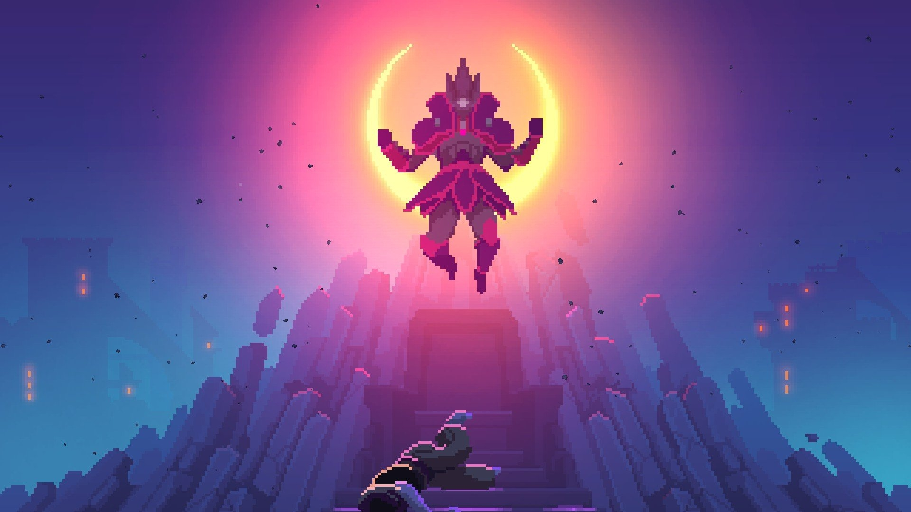

О игре
Dead Cells - это популярная рогалик-платформер игра,
разработанная Motion Twin. Игра сочетает в себе элементы метроидвании и рогалика,
что означает, что игроки исследуют разветвленные уровни, сражаются с врагами и собирают добычу,
чтобы улучшить своего персонажа. Одной из особенностей Dead Cells является случайная генерация уровней,
что делает каждое прохождение уникальным. Игра также известна своим быстрым и жестким геймплеем,
а также красочной пиксельной графикой. Dead Cells получила положительные отзывы за свою сложность,
атмосферу и игровой процесс.
Основной сюжет
История начинается с того, что мы появляемся из трубы в виде неопределенной субстанции и захватываем первое попавшееся безголовое тело.
лавный герой лишен воспоминаний о своем прошлом, включая имя, обстоятельства своего превращения и цели, которые он мог преследовать.
При исследовании мира Dead Cells мы сталкиваемся с Хранительницей времени,
но не можем уничтожить ее, так как она исчезает без следа во время битвы, произнося фразу "Нет, не сейчас."
При первом посещении тронного зала мы встречаем Короля, сидящего за своим защитным полем на троне, а наш путь к нему преграждает Десница Короля.
После победы над Десницей мы можем взять его главное оружие - Двойное копье, с помощью которого разрушаем защитное поле вокруг Короля и наносим решающий удар.
Первая концовка
Когда главный герой атакует тело Короля, оказывается, что это всего лишь ловушка:
тело взрывается, уничтожая его собственное тело.
В итоге герою приходится вновь отправиться в начало игры через трубопровод.
Попав в начало снова, герой снова овладевает чужим телом, но теперь он способен выходить из него по своему усмотрению,
сохраняя при этом связь. Важно отметить исчезновение огромного скелета в комнате и разрушение гигантской двери,
открывшей путь в увлекательное помещение с лавой. Кроме того, теперь у главного героя есть стволовая клетка босса,
которая способна изменить окружающую среду, если добавить её в резервуар в начальной комнате.
Пройдя путь с уже установленной клеткой, мы сможем снова победить Десницу Короля, однако самого короля мы уже не встретим.
Поскольку наше тело больше не было разрушено, главный герой сможет дойти до конца тронного зала,
где обнаружит загадочную дверь с изображением пяти стволовых клеток.
У нас нет столько клеток
(мы можем получить максимум четыре от Десницы короля, убивая его последовательно и добавляя новые стволовые клетки в окружение),
поэтому главному герою не останется ничего, кроме как покинуть тело и вернуться в самое начало через фонтан.
После победы над Гигантом с четырьмя уже имеющимися стволовыми клетками,
мы услышим немного измененные последние слова Гиганта, которые приведут
к тому, что он передаст нам долгожданую пятую стволовую клетку.
Коллекционер
Пройдя в дверь с пятой стволовой клеткой, которую он получил после победы над Десницей Короля,
главный герой достигает Обсерватории, где живет Коллекционер, который ранее уже брал у него
стволовые клетки для создания нового вооружения и мутаций.
Вторая концовка
В ходе битвы с Коллекционером, герою удается вырвать у него зелье и выпить его.
Это зелье оказывается ключевым для победы над противником,
после чего тот произносит свои последние слова.
После смерти Коллекционера тело главного героя начинает разлагаться,
поскольку лишь болезнь поддерживает его жизнь в мертвом обличии,
а выпитое зелье эту болезнь уничтожает. Однако сам герой остается лишенным тела,
продолжая свое существование.
Встреча с Хронительницей времен
Во время новой встречи с Хранительницей времени, главный герой,
вступая в новый этап своего путешествия,
случайно привлекает внимание Хранительницы,
которая таинственным образом тянет его через портал в свою башню.
Там она высказывает свои обвинения в адрес главного героя,
заставляя его осознать свою ответственность за происходящие беды.
Затем, используя свои временные возможности, она возвращает время назад,
воскрешая многих из умерших обитателей мира.
Тело короля после искажения времени
После преодоления искаженного времени и победы над Десницей,
главный герой решает не уничтожить тело Короля,
а занять его место, воплотившись в нем.

Третья концовка
После встречи с Коллекционером в обсерватории в облике Короля,
главный герой услышал от него знакомый монолог о панацее.
Но на этот раз, после короткой схватки, тело не разрушилось,
а излечилось от болезни. Приняв облик Короля,
главный герой направился к своему законному трону,
однако его спокойствие было недолгим. Хранительница времени
продолжала искажать ход событий, и к Королю прибыл ещё один
главный герой из параллельной временной линии. Оба сражались,
сталкиваясь друг с другом, и здесь заканчивается третья концовка истории Dead Cells...
Передвижение
При нажатии клавиш A,D персонаж будет двигаться:
Клавиша A(ру расскладка буква Ф), персонаж будет двигаться влево.
Клавиша D(ру расскладка буква В), персонаж будет двигаться вправо.
При нажатии клавиш W, S персонаж будет забираться по лестницам.
Также при нажатии клавиши S, персонаж может приседать.
Прыжки
Прыжки позволяют персонажу:
Избежать атаки врага;
Попадать в засереченные места от игрока;
Использовать пикирование;